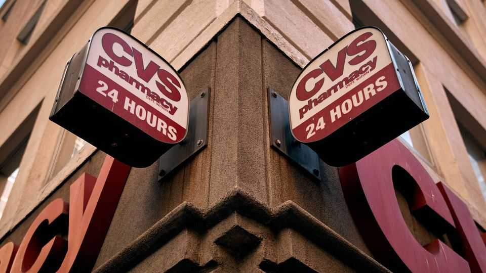
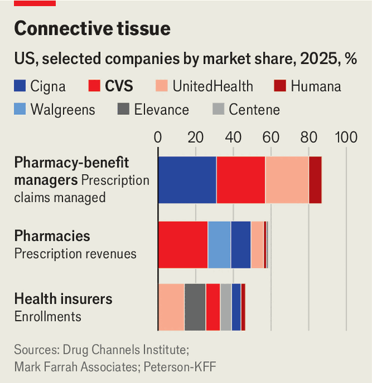

The break-up of CVS marks a turning point in American health care
The trend towards vertical integration may soon reverse

Nov 5th 2026
In the 1960s two brothers in Massachusetts co-founded a drugstore chain called the Consumer Value Stores. Today CVS is America’s largest such business. Yet over time it became much more than a pharmacy, first by expanding into the booming business of negotiating bulk discounts with drugmakers, and then by offering its own health-insurance plans. In all three markets it is one of America’s largest companies (see chart).
On November 4th CVS announced that it would unwind this vertically integrated model, by splitting in two. One half will be made up primarily of its insurance arm and the pharmacy-benefit manager (PBM) that negotiates drug prices, with annual revenue of around $300bn. The other will take its retail pharmacies and walk-in clinics, which together make a little over $90bn in sales a year. Measured by revenue affected, it is the largest break-up in over a decade, and the largest ever in health care. It also signals a turning point for the industry.

When CVS purchased Aetna, a health insurer, in 2018, it hailed the deal as the start of a new model for American health care. Companies would become more efficient by integrating and controlling large swathes of the country’s convoluted health system. At times the insurance arm has been a source of pain; two years ago profits were plummeting after the company misjudged the cost of services for patients on its health plans. But since then David Joyner, the boss of CVS, has restored Aetna to health—and proved the profitability of the vertically integrated model.
So why abandon it? The explanation may lie in an increasingly hostile political environment. Lawmakers in America—both Republicans and Democrats—have become critical of vertically integrated health-care firms, blaming them for passing high costs onto consumers.
Critics have been particularly focused on tie-ups between pharmacies and PBMs. Combining with PBMs allowed drugstore chains to share in the often opaque cut of rebates that these middlemen took from pharma companies, and to direct more business to their stores. Politicians now decry this as anti-competitive. In 2025 Arkansas became the first state to pass a law barring the integration of pharmacies with PBMs, though it is held up in the courts following a challenge from CVS and others. Neeraj Sood of the University of Southern California thinks other states will soon follow. Tennessee already has.
Investors appear nervous about the break-up plan. CVS’s share price fell by 13% following the announcement. That may reflect the poor prospects for the retail arm following a split. CVS’s pharmacy business is the market leader, and has fared better than competitors like Walgreens, which was taken private in 2025. But adjusted operating margins have fallen from 7.1% in 2021 to 4.7% this year, reckon analysts at JPMorgan Chase, a bank. Threats abound. Drugmakers such as Eli Lilly and Novo are bypassing pharmacies by selling weight-loss jabs and other medicines directly to consumers. E-commerce firms including Amazon are also muscling into the drugstore business.
Moreover, even CVS’s insurance-and-benefits arm may come into politicians’ cross-hairs before long. “If every insurer has their own PBM, there’s no incentive for new PBMs to come onto market,” says Dr Sood, as many of the potential customers are already spoken for. The end of vertical integration in American health care may just be getting started. ■